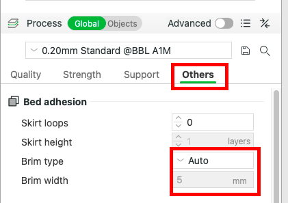

In this chapter you will be guided through your first printing experience!
>
Chapter 1: Get your 3D Model
To test your skills and provide you with hands-on experience, you will print your first model:
The Piranha. Don’t worry — all instructions will be provided! Based on your preferance, you can also print the HCI Logo of TU Vienna.
Download the STL file An STL file is a 3D model file format that describes the surface geometry of an object using a mesh of triangles, commonly used for 3D printing.: Scroll down and locate the two STL files. If you want to print the HCI Logo, the download will automatically happen when you click the link above.
Download the first file as shown below:
Locate the file: You should now see the file in your Downloads folder on your
desktop.
>
Chapter 2: Slicing your model
Preparing Your Model for Printing
Now that you’ve downloaded your model, it’s time to import it into your slicerSlicing is the process of dividing a 3D model into thin horizontal layers and generating the printer’s toolpaths and settings, which guide the 3D printer to build the object layer by layer. and prepare it for printing.
Preparation: If you don’t already have Bambu StudioBambu Studio is a slicing software designed for preparing 3D models for printing, specifically optimized for Bambu Lab printers., you can download it
here.
It’s also recommended to review the “3D Printer” chapter in advance.
Open Bambu Studio.
Import your model: You can drag and drop your file into Bambu Studio OR Go to File > Import and select your downloaded STL file.
Set your parameters: Choose the correct settings such as layer height, infill density, and
supports.
⚙️ Setting
✅ What to Do
ℹ️ Why It Matters
üñ®Ô∏è Printer
Select Bambu Lab A1 mini
Ensures settings match your printer’s size and features.
üéûÔ∏è Filament TypeFilament is the thermoplastic material used by 3D printers to create objects layer by layer.
Choose PLAPLA is a biodegradable plastic commonly used in 3D printing due to its ease of use and low printing temperature. or other compatible filament
PLA is easy to print and ideal for models like PIRANHAZ or the HCI Logo.
üìè Layer HeightLayer height is the thickness of each printed layer in a 3D print, affecting both detail and print speed.
0.20 mm for standard 0.16 mm for more detail
Lower height = smoother finish, but takes longer.
üèóÔ∏è Infill Infill is the internal structure of a 3D print that provides strength and support while saving material.
Set to 15–20% (Grid or Gyroid)
Keeps the model light and strong.
üö´ SupportsSupports are temporary structures printed to hold up overhangs or bridges during 3D printing, needed when parts hang at steep angles.
Disable completely
Not needed for PIRANHAZ or the HCI Logo when oriented correctly (see below: Orientation).
üß≤AdhesionA brim is a flat layer printed around the base of a 3D model to improve bed adhesion and prevent warping.
Enable a Brim (3–6 lines)

Prevents lifting; improves bed adhesion.
üß≠ OrientationOrientation refers to the position and angle of a 3D model on the print bed, affecting strength, surface quality, and print success.
Lay Flat (belly on plate)
Optimizes print without needing supports.
üìê ScaleScale is the size adjustment of a 3D model before printing to fit specific dimensions or requirements.
Keep at 100%
Fits well on A1 mini print bed.
üîç Preview
Use Preview Slice
Check layers and potential issues before printing.
Final Check: Make sure the print preview looks correct (no error messages pop up) and all settings are accurate (table above).
Your model is now ready for printing! The next chapter will walk you through the actual print process.
>
Chapter 3: Preparing Your Printer for the Print
Before you can start your print, it’s important to ensure your Bambu Lab A1 Mini is properly
prepared.
This includes basic setup, maintenance checks, and confirming the connection between your slicer (Bambu
Studio) and the printer.
Power on and update firmware:
Make sure the printer is plugged in and turned on. The Power button is placed at the back of the printer.
In additon, check for any available firmware updates via the touchscreen interface (will be shown automatically if available).
Load filamentFilament is the thermoplastic material used by 3D printers to create objects layer by layer.:
The Bambu Lab A1 mini has an automatic filament loading system. Insert the filament into the AMS unit The AMS Unit is an automatic system that holds and feeds multiple filament spools to a 3D printer, allowing longer or multi-color prints without manual changes. .by taking the end of your filament and inserting it into the AMS filament feeder slot:
Push gently until the AMS mechanism grabs the filament (you need to push it until it stops, you will feel this). Then go to the screen and click on to the fillament button and then on "load". If the printer asks you for additional information on your fillament click yes.
Select 'Bambu Lab' and 'PLA Basic' and click OK. Than the printer will go through some automatic steps. Afterwards a new prompt will pop up asking you if you see the fillament coming out of the extruder (be sure to put something below it to catch the filament afterwards - see picture below). Check this and click DONE if fine (note: this extruder test happens before every print, even if the filament was already loaded):
Check Wi-Fi or USB connection:
Ensure that your printer and your laptop are connected to the same Wi-Fi. If your printer is connected, a Wi-Fi icon will appear on the screen.To connect your Bambu Lab A1 Mini to Wi-Fi, use the touchscreen to go to the “Settings” menu. From there, select “Network” or “Wi-Fi.” You will see a list of available Wi-Fi networks; find and select your home or office Wi-Fi network. Then enter the Wi-Fi password using the on-screen keyboard. It’s important that your computer is connected to the same Wi-Fi network as the printer.
You can check this on your computer by clicking the Wi-Fi icon and making sure it matches the network name you chose for the printer.
If you don’t want to use Wi-Fi or can’t connect the printer to the network, you can transfer your sliced file using a microSD card or a USB drive. To do this, save the sliced file from Bambu Studio onto your microSD card or USB drive plugged into your computer. Then, insert the microSD card or USB drive into the slot on the side of your Bambu Lab A1 Mini. On the printer’s touchscreen, navigate to the option to print from external storage, select your file, and start printing.
Double-check materials and bed:
Confirm that:
The filament is loaded and extruding correctly
The print bed is clean and free of debris
Your 3D model file is ready in Bambu Studio, and your Bambu Lab A1 Mini printer is turned on and connected to the same Wi-Fi network. Before you can send the file, you need to make sure you are logged into Bambu Studio. Sometimes, the login prompt doesn’t show up automatically, so open Bambu Studio, click the account icon or menu in the top corner, and select log in. Enter your username and password, or create a new account if needed. Logging in allows the software to connect to your printer.
After logging in, your sliced 3D model will be ready to send. Near the print button, you’ll see a dropdown with two options: “Print” and “Send.” Choosing “Print” will start printing your model immediately. Choosing “Send” will transfer the file to the printer’s memory without starting the print; you’ll see a progress bar showing the download status.
>
Chapter 4: Printing & Refining
If you directly started your print as described in the chapter before: The printing process will automatically start.
If you send your model to the printer: Go to the printers display, click on 'print files' and select your model. Click 'next' and it will start printing your file.
For both cases, you can follow the printing process via the touchpad interface:
Here is an example of how the printing will look like:
When the print is finished you will get a notification on the touchpad as well as hear a sound from the printer. Please wait for approx. 5 minutes for the printer to cool down to prevent from hurting yourself. When cooled down (slowly touch the bed with your finger to check), you can remove the bed from the printer and separate the model by carefully bending the bed:
Make sure to clean up any filament left-overs on the bed and place it back. Then switch off the printer - well done! You mastered your first print!
>
Chapter 5: No Printer available? Try it with our AR 3D Printer Simulation
Try it yourself!
Want to walk around the printer virtually and learn setup steps interactively?
How to use
Print the included Hiro MarkerA Hiro marker is a
black-and-white square used in AR (Augmented Reality) to help cameras recognize position and
orientation in 3D space.
Place the marker on a flat surface
Open the app and point your camera at the marker
Explore, tap the 3D buttons, and simulate a 3D print!
Download here
(Android
only) or scan the QR Code on the right on your phone directly